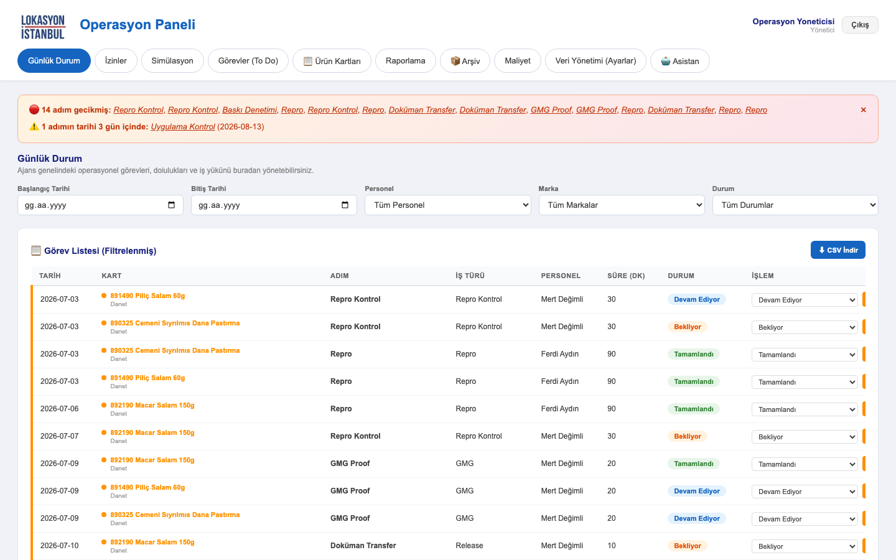
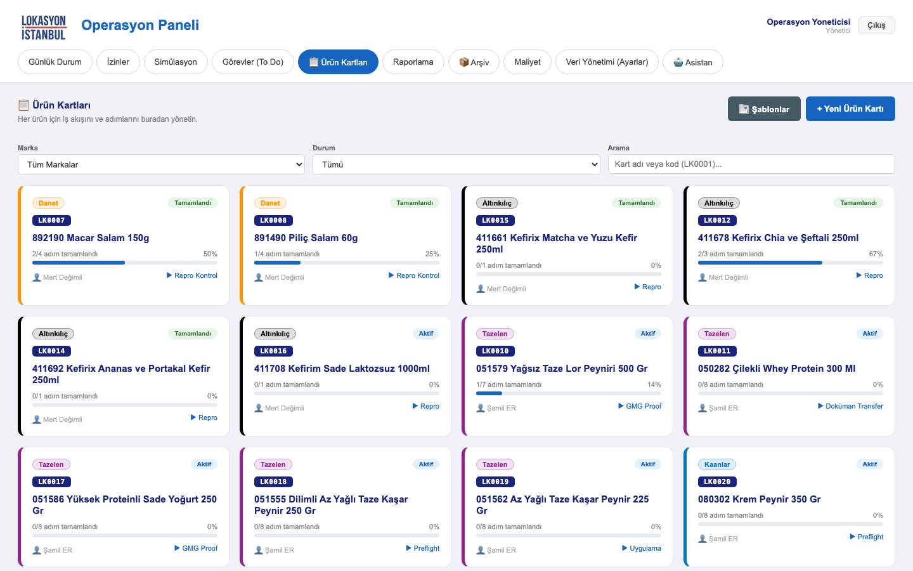
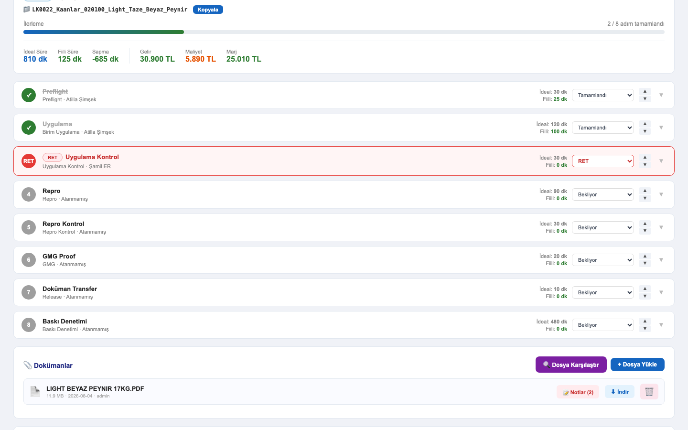
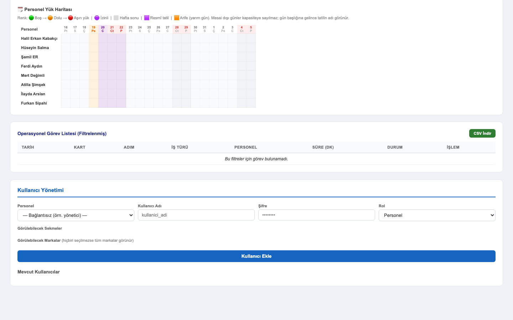

Lokasyon İstanbul
Operasyon
Paneli
Kullanım Kılavuzu


Bu kılavuzdaki ekran görüntüleri panelin canlı sürümünden alınmıştır.

Panel on sekmeden oluşur. Hepsinin merkezinde ürün kartları vardır: iş oradan tanımlanır, diğer ekranlar o veriden beslenir.
| Sekme | Ne için |
|---|---|
| Günlük Durum | Günün işleri, filtreler, durum güncelleme |
| İzinler | İzin girişi; kapasiteye otomatik yansır |
| Simülasyon | “Bu işler için kaç kişi gerekir?” |
| Görevler (To-Do) | Kişisel not defteri |
| Ürün Kartları | Kartlar, adımlar, dokümanlar, notlar |
| Raporlama | Yük, kapasite, personel yük haritası |
| Arşiv | Biten işler |
| Maliyet | Maliyet / gelir / marj |
| Veri Yönetimi | Tanımlar ve kullanıcılar (yönetici) |
| Asistan | Panel verisine Türkçe soru sorma |
| Rol | Yetkiler |
|---|---|
| Personel | Kendi işlerini görür ve günceller · kart açar, adım ekler · doküman yükler ve üzerine not düşer · kendi iznini girer · kendi notlarını yönetir |
| Yönetici | Hepsi + kart adı değiştirme ve silme · marka rengi · kayıtlı simülasyon silme · haftalık özet abonelikleri · personel, iş türü, marka ve kullanıcı tanımları |
Panelde çoğu yerde “kaydet” düğmesi yoktur: durum değiştirme, tarih atama, not yazma gibi işlemler anında kaydedilir. Sağ altta kırmızı bir uyarı çıkmadıysa kayıt başarılıdır.
Açılış ekranı. Ürün kartlarındaki adımları tek listede toplar. Personel hesabında yalnızca size atanmış işler, yönetici hesabında herkesinki görünür.
Her ürün bir karttır. Kart kapağı, kartı açmadan durumu anlamanızı sağlar.
LK0024 gibi kodu yazarak
doğrudan bulabilirsiniz. Marka ve duruma göre de süzebilirsiniz.

Kartın altındaki sıralı adımlar işin omurgasıdır. Raporlama, kapasite ve maliyet hesapları bu adımlardan üretilir.
Adıma tıklayın: sorumlu, hedef tarih, zorluk, süre sayacı (▶ Başlat / ⏸ Durdur) ve adıma özel notlar açılır. Sıralamayı sağdaki ▲▼ ile değiştirirsiniz.

Revize talebini sözlü bırakmayın: dosyayı panelde açın, düzeltilecek yeri işaretleyin, düzeltilince kapatın. Prepress revize akışının merkezi budur.
← → sayfa,
Esc kapat.
Revize gelen dosyada neyin değiştiğini gözle aramak yerine panele buldurun. Kart detayındaki 🔍 Dosya Karşılaştır iki dosyayı piksel piksel karşılaştırır.
Bir noktaya yakınlaşın, sonra 1 ve 2 tuşlarıyla A ile B arasında
gidip gelin: yakınlaştırma ve konum korunur, değişiklik gözünüze çarpar. Bu, iki dosyayı
yan yana açıp aramaktan çok daha hızlıdır.
| Tuş / düğme | İşlev |
|---|---|
1 2 3 | A / B / Farklar arası geçiş |
| Fare tekerleği | İmlecin olduğu noktaya yakınlaşır |
| Sürükleme | Görüntüde gezinme |
1:1 | Gerçek piksel boyutu |
0 / ⤢ | Ekrana sığdır |
Esc | Kapat |
Seçilen aralıkta ekibin ne kadar dolu olduğunu gösterir. Varsayılan olarak içinde bulunulan ay gelir.
Takvim günü değil mesai günü esas alınır. Resmî tatiller her yıl otomatik hesaplanır (dini bayramlar dâhil); izinler kapasiteden düşülür.
| Gün | Sayılan |
|---|---|
| Normal iş günü | 8 saat |
| Arife (Ramazan, Kurban, 28 Ekim) | 4 saat |
| Hafta sonu ve resmî tatil | 0 saat |

Kendi izninizi buradan girersiniz: başlangıç–bitiş tarihi ve süre (2 saat / 4 saat / tam gün). Aralıktaki her gün için ayrı kayıt oluşur.
Ürün kartlarından bağımsız kişisel not defteri. Başlık, açıklama, hedef tarih ve isterseniz bir kişiye atama.
Sekmedeki kırmızı rozet tamamlanmamış not sayınızdır. Aktif / Tamamlanan / Tümü filtreleri ve tarih aralığı vardır.
Biten işler arşive gönderilir; aktif listeleri ve kapasite hesabını şişirmez.
Seçilen müşteri ve tarih aralığındaki işlerin maliyetini, fiyat listesine göre gelirini ve marjını karşılaştırır. Fiyatlar iş türü ve zorluk bazında, istenirse markaya özel tanımlanır. Liste CSV, teklif PDF olarak dışa aktarılır.
“Şu kadar işi şu kadar günde bitirmek için kaç kişi gerekir?” İş paketlerini (iş türü × adet × zorluk) girip hedef süreyi iş günü olarak yazarsınız. Senaryo kaydedilip sonra tekrar yüklenebilir.
| Bölüm | Ne tanımlanır |
|---|---|
| Personel | Ad, e-posta, seviye, saatlik maliyet |
| İş Türleri | İş türü ve basit / normal / kompleks süreleri |
| Markalar | Marka ve rengi (panelde her yerde bu renk kullanılır) |
| Haftalık Özet | Hangi markanın özeti kime gidecek |
| Kullanıcılar | Rol, görülebilecek sekmeler ve markalar |
Bir adım Tamamlandı yapıldığında, aynı karttaki sıradaki adımın sorumlusuna otomatik mail gider: hangi kart, hangi görev, varsa hedef tarih.
Tanımlı alıcılara her pazartesi 08:00’de otomatik özet gider. Panelin açık olması gerekmez.
| Bölüm | İçerik |
|---|---|
| Özet kutuları | Aktif kart · geçen hafta biten · RET · gecikmiş · bu hafta planlı |
| RET listesi | Geri dönen adımlar, kart bilgisiyle |
| Gecikmiş adımlar | Hedef tarihi geçmiş işler |
| Kartlar ve tüm adımlar | Sıra, adım, iş türü, tarih, durum |
| Soru | Yanıt |
|---|---|
| Bir sekmeyi göremiyorum | Hesabınıza tanımlı değil. Yöneticiden isteyin, sonra çıkış yapıp yeniden girin. |
| Günlük Durum’da işlerim yok | Tarih filtresini temizleyin; boşken tüm aktif işleriniz listelenir. |
| Yeni marka listede çıkmıyor | Sayfayı yenileyin (Cmd/Ctrl + Shift + R). |
| Bildirim maili gitmedi | Sıradaki adımda sorumlu atanmış mı, o kişinin e-postası tanımlı mı? |
| Kart adını değiştiremiyorum | Bu işlem yalnızca yöneticide. |
| PDF açılmıyor | Sayfayı yenileyin; PDF kütüphanesi yüklenememiş olabilir. |
| Değişikliğim kayboldu mu? | Kaydet düğmesi yok, anında kaydedilir. Kırmızı uyarı çıkmadıysa kayıtlıdır. |
| Ekran | Tuşlar |
|---|---|
| Doküman notu | ← → sayfa · Esc kapat |
| Karşılaştırma | 1 2 3 geçiş ·
+ − zoom · 0 sığdır · Esc kapat |
F12 → Console’daki kırmızı satır varsa ekleyin — kaynağı hızla gösterir.